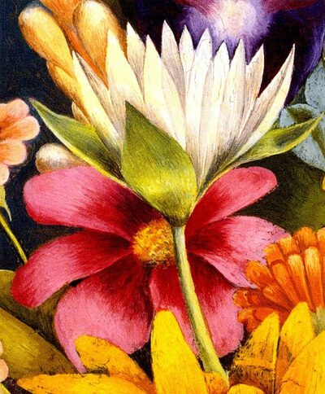

Frida Kahlo,1907 - 1954,"Primitivism,Surrealism",Mexican,"Frida Kahlo de Rivera (Spanish pronunciation: [ˈfɾiða ˈkalo]; born Magdalena Carmen Frida Kahlo y Calderón; 6 July 1907 – 13 July 1954) was a Mexican artist who painted many portraits, self-portraits and works inspired by the nature and artifacts of Mexico. Inspired by the country's popular culture, she employed a naïve folk art style to explore questions of identity, postcolonialism, gender, class and race in Mexican society. Her paintings often had strong autobiographical elements and mixed realism with fantasy. In addition to belonging to the post-revolutionary Mexicayotl movement, which sought to define a Mexican identity, Kahlo has been described as a surrealist or magical realist.Born to a German father and a mestiza mother, Kahlo spent most of her childhood and adult life at her family home in Coyoacán, La Casa Azul, now known and publicly accessible as the Frida Kahlo Museum. She was disabled by polio as a child. Until a traffic accident at age eighteen caused lifelong pain and medical problems, she had been a promising student headed for medical school. During her recovery, she returned to her childhood hobby of art with the idea of becoming an artist.",http://en.wikipedia.org/wiki/Frida_Kahlo,120
